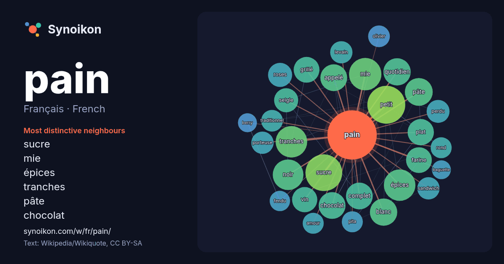

Français · French · word of the day list
pain
“bread” · The words found around it in 1426 instances from French Wikipedia, Wikiquote.

Most distinctive neighbours
- sucre 45×
- mie 39×
- épices 36×
- tranches 34×
- pâte 27×
- chocolat 26×
- grillé 25×
- farine 24×
- noir 23×
- quotidien 23×
- complet 22×
- seigle 22×
- plat 21×
- vin 19×
- levain 19×
- sandwich 19×
- porteuse 18×
- petit 17×
- pita 17×
- roses 17×
× = how many times more often than in general French Wikipedia text.
Most frequent neighbours
- petit 52
- sucre 49
- mie 38
- épices 36
- tranches 36
- noir 34
- pâte 28
- blanc 27
- quotidien 27
- appelé 26
- chocolat 26
- complet 26
- plat 25
- farine 24
- grillé 24
- vin 23
- album 21
- français 21
- roses 21
- seigle 21
In context
- Pour les articles homonymes, voir Pain (homonymie). Pain Différentes sortes de pain d'une boulangerie. Le pain est l'aliment de base traditionnel de plusieurs Wikipedia snippets · Pain
- Pain d'épices Pain d’épices artisanal. Le pain d'épices (ou pain d'épice) est un gâteau sucré traditionnellement avec du miel, agrémenté d'é … Wikipedia snippets · Pain d'épices
- de pain ou simplement baguette, parfois appelée baguette de Paris ou pain français (belgicisme), mais aussi pain baguette est une variété de pain, reconnaissable Wikipedia snippets · Baguette (pain)
- pas confondre avec Pain au cacao. Pain au chocolat Chocolatine Pain au chocolat ou chocolatine à l'étal d'une boulangerie. Le pain au chocolat, aussi Wikipedia snippets · Pain au chocolat
- altilis Fruits de l'arbre à pain. Espèce Artocarpus altilis (Parkinson) Fosberg, 1941 Classification phylogénétique L'arbre à pain (Artocarpus altilis) est Wikipedia snippets · Arbre à pain
- Pain perdu Pain perdu. Le pain perdu, aussi appelé pain doré (en Belgique et au Canada) ou croûtes dorées (en Suisse), est un mets constitué de pain trempé Wikipedia snippets · Pain perdu
- Le pain est garni de saumon fumé, de boulettes de bœuf, de crudités, etc. Article détaillé : Pain suédois. En France, on trouve aussi d'autres pains suédois Wikipedia snippets · Pain polaire
- d'animation)#Synopsis. Grille-pain Un modèle de grille-pain permettant de faire griller des tranches de pain à la chaine. Un grille-pain, aussi appelé toasteur Wikipedia snippets · Grille-pain
More French words
- art
- automne
- carte
- chanson
- chat
- chemin
- cheval
- chien
- climat
- cloche
- cœur
- dieu
- désert
- eau
- famille
- forêt
- histoire
- hiver
- horloge
- jardin
- langue
- miel
- miroir
- monnaie
- montagne
- mort
- mère
- nature
- nourriture
- ombre
- pluie
- pont
- pouvoir
- printemps
- santé
- science
- sel
- silence
- temps
- tempête
- thé
- train
- travail
- trésor
- vie
- ville
- vérité
- étoile
- île
Precomputed on 2026-10-09 with default settings (±5 words, medium corpus). The interactive map can refresh it with live data.